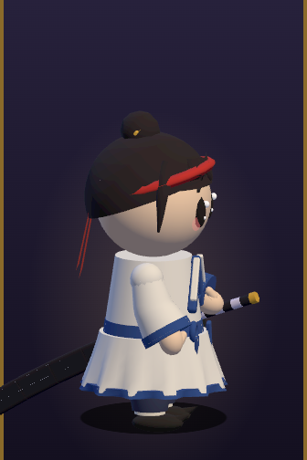
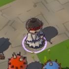

<title>검객 이랑 디자인 시안</title>
<link rel="stylesheet" href="https://fonts.googleapis.com/css2?family=Jua&family=Gowun+Dodum&display=swap">
<style>
/* 레이아웃: 시안 세 장을 나란히(좁으면 한 줄씩). 장마다 전신·얼굴·표정·플레이 크기. 아래에 지금 모습과 필요한 자료 */
:root {
  --bg: #f1eef4; --fg: #241f2a; --muted: #6c6474; --card: #ffffff; --line: #ddd7e4; --accent: #c8302c; --pick: #2a8a6a; --stage: #e7e2ee;
  --f-display: 'Jua', 'Gowun Dodum', 'Apple SD Gothic Neo', sans-serif;
  --f-body: 'Gowun Dodum', 'Apple SD Gothic Neo', 'Malgun Gothic', sans-serif;
}
@media (prefers-color-scheme: dark) { :root:not([data-theme="light"]) { --bg: #16131b; --fg: #efeaf3; --muted: #a59cb0; --card: #211c28; --line: #362f40; --accent: #ff6a5a; --pick: #5ad8a8; --stage: #2c2636; color-scheme: dark } }
:root[data-theme="dark"] { --bg: #16131b; --fg: #efeaf3; --muted: #a59cb0; --card: #211c28; --line: #362f40; --accent: #ff6a5a; --pick: #5ad8a8; --stage: #2c2636; color-scheme: dark }
body { background: var(--bg); color: var(--fg); font-family: var(--f-body); line-height: 1.6; }
main { max-width: 1240px; margin: 0 auto; padding-inline: 18px; padding-block: 28px 60px; display: grid; gap: 28px; }
h1, h2, h3 { font-family: var(--f-display); font-weight: 400; margin: 0; text-wrap: balance; }
h1 { font-size: clamp(28px, 4.4vw, 40px); }
h2 { font-size: 24px; }
.lead { color: var(--muted); max-width: 72ch; margin: 6px 0 0; }
.cards { display: grid; grid-template-columns: repeat(3, minmax(0, 1fr)); gap: 16px; }
@media (max-width: 980px) { .cards { grid-template-columns: 1fr; } }
.card { background: var(--card); border: 1px solid var(--line); border-radius: 16px; padding: 16px; display: grid; gap: 12px; align-content: start; min-width: 0; }
.card header { display: flex; justify-content: space-between; align-items: baseline; gap: 8px; flex-wrap: wrap; }
.card h3 { font-size: 24px; }
.card h3 small { font-family: var(--f-body); font-size: 14px; color: var(--muted); margin-left: 6px; }
.badge { font-family: var(--f-display); font-size: 14px; padding: 2px 10px; border-radius: 999px; background: var(--stage); }
.stage { background: var(--stage); border-radius: 12px; display: flex; justify-content: center; position: relative; overflow: hidden; }
.stage svg { display: block; max-width: 100%; height: auto; }
.guide { position: absolute; inset: 0; pointer-events: none; }
.guide i { position: absolute; left: 6%; right: 6%; border-top: 1px dashed var(--accent); opacity: .55; }
.guide i b { position: absolute; left: 0; top: -18px; font-size: 11px; font-style: normal; font-weight: 400; color: var(--accent); }
.row2 { display: grid; grid-template-columns: minmax(0, 1fr) minmax(0, 1fr); gap: 10px; }
.face { background: var(--stage); border-radius: 12px; display: flex; justify-content: center; }
.face { align-items: center; } .face svg { width: 100%; height: auto; max-width: 220px; overflow: hidden; }
.stage svg, .play svg { overflow: hidden; }
.exprs { display: flex; gap: 6px; flex-wrap: wrap; }
.exprs button, .tog { font: inherit; font-size: 14px; padding: 3px 12px; border-radius: 999px; border: 1.5px solid var(--line); background: var(--card); color: var(--fg); cursor: pointer; }
.exprs button[aria-pressed="true"], .tog[aria-pressed="true"] { border-color: var(--accent); color: var(--accent); }
button:focus-visible { outline: 2px solid var(--accent); outline-offset: 2px; }
.play { border-radius: 12px; height: 132px; background: #5d8c3e url(ground.jpg) center / cover; display: flex; align-items: flex-end; justify-content: center; gap: 30px; padding-bottom: 12px; position: relative; }
.play span { position: absolute; left: 8px; top: 6px; font-size: 12px; color: #fff; background: rgba(0,0,0,.45); padding: 0 8px; border-radius: 999px; }
.play svg { filter: drop-shadow(0 0 0 #000); }
.pal { display: flex; gap: 6px; }
.pal i { width: 26px; height: 26px; border-radius: 8px; border: 1px solid var(--line); }
.notes { margin: 0; padding-left: 18px; display: grid; gap: 3px; font-size: 15px; }
.pickbtn { font: inherit; font-family: var(--f-display); font-size: 17px; padding: 8px 14px; border-radius: 12px; border: 2px solid var(--pick); color: var(--pick); background: transparent; cursor: pointer; }
.pickbtn[aria-pressed="true"] { background: var(--pick); color: var(--card); }
.now { display: grid; grid-template-columns: auto auto minmax(0, 1fr); gap: 16px; align-items: center; background: var(--card); border: 1px solid var(--line); border-radius: 16px; padding: 16px; }
@media (max-width: 720px) { .now { grid-template-columns: 1fr; } }
.now img { border-radius: 12px; max-width: 100%; display: block; }
.box { background: var(--card); border: 1px solid var(--line); border-radius: 16px; padding: 16px 20px; max-width: 86ch; }
.box ul { margin: 6px 0 0; padding-left: 20px; display: grid; gap: 4px; }
#picked { font-family: var(--f-display); color: var(--pick); min-height: 1.6em; }
</style>
<main>
  <header>
    <h1>검객 이랑, 새 얼굴 고르기</h1>
    <p class="lead">얼굴형, 눈과 표정, 머리 실루엣, 몸 비율, 옷 모양을 처음부터 다시 잡은 시안 세 가지예요. 표정 단추로 기본·기합·아픔을 바꿔 보고, 아래 풀밭 칸에서 실제 게임 크기로 얼마나 잘 보이는지 확인해 주세요. 고른 시안을 3D로 옮겨 다시 보여 드릴게요.</p>
  </header>

  <section class="cards" id="cards"></section>
  <p id="picked" aria-live="polite"></p>

  <section>
    <h2>지금 검객 (비교용)</h2>
    <div class="now">
      
      
      <p class="lead" style="margin:0">지금은 공 같은 머리에 원통 몸통을 붙인 2.3등신 3D 인형이에요. 눈은 키웠지만 얼굴형, 머리 실루엣, 옷 모양은 그대로라 장난감처럼 보여요.</p>
    </div>
  </section>

  <section class="box">
    <h2>고른 다음 진행 순서</h2>
    <ul>
      <li>고른 시안의 앞·옆·뒤 모습을 같은 방식으로 그려 확정해요(턴어라운드).</li>
      <li>그 그림대로 검객 3D 모델을 새로 만들어요. 얼굴은 평평한 판에 그린 눈·입 그림을 붙여 표정이 바뀌게 하고, 머리카락은 덩어리 모양으로 실루엣을 맞춰요.</li>
      <li>캐릭터 확대 화면(직업 고르기)과 실제 플레이 크기에서 둘 다 찍어 보여 드려요.</li>
      <li>그림체를 확인받은 뒤에 도사·요정·창술사와 몬스터로 넓혀요.</li>
    </ul>
  </section>

  <section class="box">
    <h2>더 정교한 원화가 필요하면</h2>
    <p class="lead" style="margin:0">위 시안은 제가 직접 그린 벡터 그림이에요. 전문 원화 수준이 필요하면 아래 자료가 있으면 그대로 옮길 수 있어요.</p>
    <ul>
      <li><b>캐릭터 원화:</b> 앞·옆·뒤 3면도(같은 크기, 같은 자세), 표정 시트(기본·기합·아픔·놀람 4종), 색 지정(피부·머리·옷·칼 HEX 값), 칼과 소품 따로 그린 그림. PNG 2048px 이상, 배경 투명.</li>
      <li><b>3D 모델을 직접 받는 경우:</b> glTF(GLB) 파일, 삼각형 5천 개 이하, 사람형 뼈대 20개 안팎(엉덩이·척추·가슴·목·머리·어깨·팔꿈치·손·허벅지·무릎·발), 텍스처 1024~2048px, 얼굴 표정은 눈·입 텍스처 교체나 블렌드셰이프.</li>
      <li><b>필요한 동작:</b> 서 있기, 달리기, 베기 3연타, 회피, 검기, 일섬, 회오리, 맞음, 쓰러짐, 승리.</li>
      <li><b>AI로 원화 뽑기:</b> 연결된 이미지 생성 도구로 고른 시안을 바탕으로 3면도·표정 시트를 만들 수 있어요. 다만 크레딧이 들어서, 쓸지 여부는 말씀해 주시면 진행할게요.</li>
    </ul>
  </section>
</main>
<script src="chars.js"></script>
<script>
const NOTES = {
  A: ['얼굴: 아래가 넓은 떡 모양, 턱 없이 둥글게', '눈: 얼굴 높이의 1/4인 큰 보랏빛 눈, 반짝이 두 점', '머리: 둥근 앞머리 다섯 뭉치 + 상투와 금 동곳', '몸: 2등신, 짧고 퍼지는 도포와 둥근 큰 소매', '칼: 몸보다 긴 칼을 등에 비스듬히', '느낌: 귀엽고 가벼움, 작은 화면에서도 얼굴이 잘 보임'],
  B: ['얼굴: 턱이 살짝 뾰족한 소년형', '눈: 위 눈꺼풀이 굵고 날카로운 호박색 눈, 굵은 눈썹', '머리: 하늘로 뻗친 삐죽머리 + 길게 나부끼는 머리띠', '몸: 3.5등신, 저고리 위에 쾌자, 통 넓은 바지와 행전·짚신', '칼: 허리에 차고 오른손을 칼자루에', '느낌: 씩씩한 주인공, 움직임이 커 보임'],
  C: ['얼굴: 갸름한 V자, 작은 입', '눈: 가늘고 긴 아몬드형 남색 눈, 긴 속눈썹', '머리: 높이 묶은 긴 말총머리가 허리까지', '몸: 4등신, 발목까지 오는 흰 도포와 넓은 남색 깃', '칼: 은빛 칼집째 세워 듦', '느낌: 차분하고 우아함, 실루엣이 길쭉함'],
};
const state = { A: 'calm', B: 'calm', C: 'calm' };
let guide = false;
function card(id) {
  const D = DESIGNS[id], e = state[id], [h0, h1] = HEAD[id], hh = h1 - h0;
  const lines = []; for (let k = 0; h0 + hh * k <= 402; k++) lines.push(`<i style="top:${((h0 + hh * k) / 420) * 100}%"><b>${k}</b></i>`);
  return `<article class="card" id="card-${id}">
    <header><h3>${id}. ${D.name}<small>${D.heads}</small></h3><button class="tog" data-guide aria-pressed="${guide}">등신 선</button></header>
    <div class="stage">${drawDesign(id, e, 420)}${guide ? `<div class="guide">${lines.join('')}</div>` : ''}</div>
    <div class="exprs" role="group" aria-label="표정">${[['calm', '기본'], ['fight', '기합'], ['hurt', '아픔']].map(([k, n]) => `<button data-id="${id}" data-e="${k}" aria-pressed="${e === k}">${n}</button>`).join('')}</div>
    <div class="row2">
      <div class="face">${drawDesign(id, e, 220, FACEBOX[id])}</div>
      <div class="face" style="flex-direction:column;align-items:center;justify-content:center;gap:4px">${['calm', 'fight', 'hurt'].map((k) => drawDesign(id, k, 64, FACEBOX[id])).join('')}</div>
    </div>
    <div class="play"><span>실제 플레이 크기</span>${drawDesign(id, e, 46)}${drawDesign(id, e, 62)}${drawDesign(id, e, 80)}</div>
    <div class="pal">${D.pal.map((c) => `<i style="background:${c}" title="${c}"></i>`).join('')}</div>
    <ul class="notes">${NOTES[id].map((t) => `<li>${t}</li>`).join('')}</ul>
    <button class="pickbtn" data-pick="${id}" aria-pressed="false">이 시안으로</button>
  </article>`;
}
const cards = document.getElementById('cards');
function render() { cards.innerHTML = ['A', 'B', 'C'].map(card).join(''); }
render();
let picked = null;
cards.addEventListener('click', (ev) => {
  const b = ev.target.closest('button'); if (!b) return;
  if (b.dataset.e) { state[b.dataset.id] = b.dataset.e; render(); }
  else if (b.hasAttribute('data-guide')) { guide = !guide; render(); }
  else if (b.dataset.pick) { picked = b.dataset.pick; render(); document.getElementById('picked').textContent = `${picked}. ${DESIGNS[picked].name}을(를) 골랐어요. 대화창에 "${picked}번"이라고 알려 주시면 그대로 진행할게요.`; }
  if (picked) document.querySelector(`[data-pick="${picked}"]`)?.setAttribute('aria-pressed', 'true');
});
</script>
